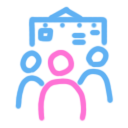
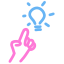
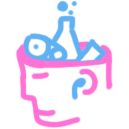

Get updated at Cognitive Science
Get inspired by your fellow cognitive science students at the blog or explore the social and scientific calendar and integrate it into your favourite calendar app.

Get inspiration for your exam
Go through earlier exam projects, look at real publications by students at cognitive science, or watch some of the amaazing CogTalks about a vast array of incredibly fascinating topics!
Find out what you can become at Cognitive Science
Read some examples of what people are doing beyond studying at cognitive science, like careers, exhange semesters, research, and publishing.

Get smarter and smarter
Check out the fantastic lists of courses, programming help, and books or drop by the blog and CogTalks for some fantastic local production of knowledge!